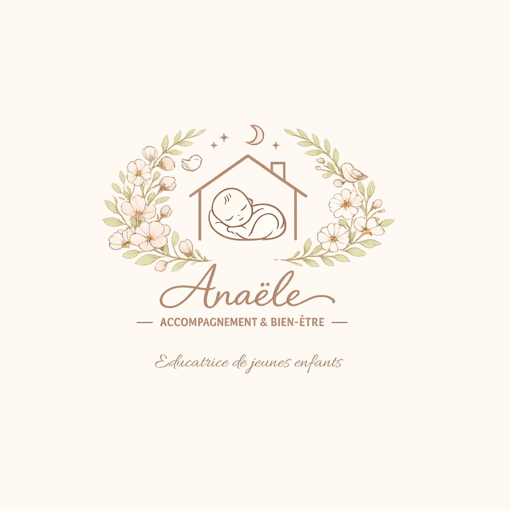

Je m’appelle Anaële, éducatrice de jeunes enfants diplômée, spécialisée dans l’accompagnement du tout‑petit et du parent. Mon approche repose sur la bienveillance, l’écoute, la douceur et le respect du rythme de chaque enfant.
J’accompagne les familles dans les premières années de vie, période essentielle où se construisent les bases du développement émotionnel, moteur et affectif.
À travers des séances personnalisées, je propose un espace sécurisant pour soutenir les parents, apaiser les enfants et favoriser un développement harmonieux.

Retour à l’accueil